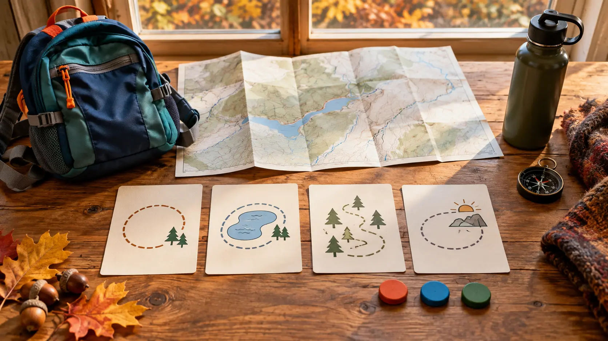

CENTRAL NEW YORK · FOUR TRAIL TYPES · ONE HONEST PICK
Central New York Family Trail Picker: Clark vs Green Lakes vs Baltimore Woods vs Beaver Lake
Stop asking which place is best. Ask which consequence the family can manage today: a cliff edge, a busy lake loop, a self-supported preserve or a staffed nature-center day.

Conceptual decision-planning image only. This original AI-assisted editorial photograph does not depict a real trail, map, park sign or destination.
The blunt version: choose Clark Reservation for geology and a short high-consequence rim; Green Lakes for the simplest lake-loop logistics; Baltimore Woods for a free, quiet preserve where you must bring your own plan; Beaver Lake for a staffed nature-center day with many easy-route choices. Then verify the official page, weather and closures before leaving.
Four good places that solve different family problems
These four Central New York outings are close enough to look interchangeable on a map. They are not. Clark Reservation asks adults to manage a real drop near portions of the rim. Green Lakes can give a family an easy visual payoff with broad, popular paths, but traffic, crowds and seasonal services change the feel. Baltimore Woods is a nonprofit preserve with free trails and no dogs, where the family should arrive with a downloaded map and a modest route. Beaver Lake is a county nature center with a staffed visitor experience, a trail network and a no-pets rule.
Choose for: geology, a compact outing and children who reliably follow edge rules. Primary cost: sustained adult attention near the rim. Skip when: running, impulsivity, ice, wet leaves or poor visibility make the drop hard to manage.
Green Lakes
Choose for: a legible lake loop, flexible turnaround and the easiest first-timer plan. Primary cost: popularity and seasonal crowd pressure. Skip when: you need solitude or are counting on closed beach and rental services.
Baltimore Woods
Choose for: a quiet, no-fee preserve and a short woodland route. Primary cost: more self-navigation and fewer assumptions about staffed help. Skip when: the family needs a pet-friendly stop or a guaranteed indoor reset.
Beaver Lake
Choose for: a nature-center anchor, many mostly easy trail choices and a wildlife-study pace. Primary cost: admission/operating details and event traffic must be checked. Skip when: a dog must join or you want a rugged challenge rather than nature study.
The rule: choose the place whose hardest part you can manage—not the place with the prettiest photo.
Current official facts to check before the keys turn
Clark Reservation: New York State Parks lists the park open year-round from sunrise to sunset. The nature center is seasonal, mid-May through Labor Day. The official description includes five trails and warns that the Cliff Trail has a ledge roughly 175 feet above the water. Up to two pets may be allowed in day-use areas unless a sign or directive prohibits them; they must be supervised and leashed no longer than six feet, and proof of rabies inoculation may be requested. That general pet policy does not remove the need to read signs at the actual trail.
Green Lakes: the official page currently says trails are open daily from dawn to dusk, vehicle entrance is free, swimming and boat rentals are closed for the season, and the 2026 camping season runs through October 11. Pets follow the state-park limit and leash rule, with exclusions for buildings, playgrounds and other posted areas. A lake loop can still be muddy, icy or temporarily rerouted; “easy” is not a promise that every surface is stroller-ready.
Baltimore Woods: the nature center says trails are open every day from dawn to dusk, with upper and lower parking, no admission or parking fee, and no dogs. The Interpretive Center is generally open weekdays 9 a.m.–4 p.m. and Saturdays 10 a.m.–4 p.m.; call when the building, restroom help or staff assistance is essential. The preserve has multiple trails with real grade changes. Download the current map and choose the loop before leaving the lot.
Beaver Lake: Onondaga County describes a nature-study preserve with roughly nine miles of mostly easy trails and extensive year-round programming. Pets are not allowed except at a specially designated pet-friendly event. Hours, admission, visitor-center access, event traffic, rentals and individual trail conditions can change; the official park page and visitor center are the check-before-you-go sources. Do not borrow a fee or closing time from an old blog.
The 90-second decision before departure
1. Name the family’s current capacity. Green means a normal route; yellow means one short loop with a hard turnaround; red means a ten-minute outdoor reset or an indoor plan. 2. Name the consequence. At Clark it may be an exposed drop; at Green Lakes, crowd and distance creep; at Baltimore Woods, navigation and grade; at Beaver Lake, operating details and keeping the day observational rather than mileage-driven. 3. Pick the exit. Write the turnaround time, not just the destination. 4. Check the official page. Hours, fees, pets, restrooms, programs and closures are volatile. 5. Check the weather twice. Once while choosing and again before stepping onto the trail.
If any required answer is missing, choose the place with the simplest consequence. For many first-time families that will be a short Green Lakes loop or a staff-confirmed Beaver Lake route—not because those places are universally “best,” but because the exits are easier to explain.
Four realistic half-day plans
Clark: 90 minutes, rim first only if the group can follow the rule
Arrive early, use the restroom if open, state the edge rule before leaving the parking area and choose one short route. Keep children on the inside of the adult near exposed sections. Do not promise the full loop. If footing is wet, leaves hide edges, visibility drops or a child begins running, turn around. A successful Clark visit can be one overlook, one geology observation and a calm return.
Green Lakes: two hours, lake payoff without mileage creep
Choose one lake as the core. Start with water and a bathroom check, walk at conversation pace and use a visible landmark as the turnaround. Do not add a second lake merely because the first loop felt easy. In fall, plan around earlier darkness and closed swimming/boat services. The low-energy version is a short shoreline segment, snack and exit.
Baltimore Woods: 60–90 minutes, one signed loop
Photograph or download the trail map, sign in if requested, and pick a route that returns before the family is tired. Leave the dog home. Treat every junction as a group stop. The no-spend value is real, but free admission does not mean no preparation: bring water, weather layers and the no-service map and meeting-point plan.
Beaver Lake: two hours, visitor center plus one nature question
Confirm current hours and admission, ask staff which short route fits the surface and mobility needs today, and give children one question such as “Where does forest meet wetland?” Keep the pace slow enough to notice tracks, birds and plant structure. Skip the distance goal. The low-energy version is the visitor center plus the shortest staff-recommended accessible segment.
Cost, food, restrooms, access and pets
Green Lakes currently lists no vehicle entrance fee, and Baltimore Woods lists no admission or parking fee. Do not turn that into a universal $0 promise: fuel, food, programs, camping and seasonal services are separate. Clark’s ordinary trail visit may not require a fee, but official notices control. Beaver Lake’s hours and admission should be verified directly because the county’s event and visitor information can change.
Pack the meal to stay in the car unless the destination explicitly permits the picnic setup you intend to use. Never assume a café. Restroom hours can be shorter than trail hours. For accessibility, ask about the exact route, surface, slope, door, restroom and construction condition that matters; an “accessible” amenity icon is not a full route audit. Clark and Green Lakes use the state-park pet rules and posted exceptions. Baltimore Woods and Beaver Lake say no pets. Service animals are governed separately.
What to pack—and what not to buy
Downloaded official map plus the exact parking location.
Water, compact snack and one spare warm/dry layer per child.
A small first-aid kit carried by an adult and needed medication under the family’s existing plan.
Phone power reserved for navigation, conditions and emergencies.
Do not buy new boots, poles or a giant daypack to solve a route-choice problem. Shorten the route first. If cold hands are the limiting factor, use the kids’ glove grip test. If the forecast is uncertain, apply the go, shorten or leave cutoff before the family is invested.
Who should skip which place
Skip Clark when edge compliance is doubtful or the surface is icy. Skip Green Lakes when crowd sensitivity is high or the family expects summer-only services. Skip Baltimore Woods when a dog must join, when the group needs a guaranteed indoor facility, or when no adult is willing to own navigation. Skip Beaver Lake when its current hours, admission or access needs cannot be confirmed. Skip all four when thunder, dangerous wind, unhealthy heat/cold, poor visibility or illness makes the fallback the smarter adventure.